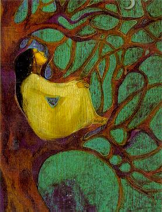

|
|

جنبش زنان و تلاش برای حفظ محیط زیست / سمیه اصفهانی
نگاه فمینیستی به نابودی منابع طبیعی و راهکارهای حفظ آن
شنبه26 شهریور 1390
تغییر برای برابری: این روزها شاهد اعتراضات گسترده نسبت به خشکسالی دریاچه ارومیه، بزرگترین دریاچه خاورمیانه و دومین دریاچه آب شور دنیا، هستیم. دریاچه ارومیه از سوی سازمان یونسکو به عنوان یکی از مهمترین زیستگاههای طبیعی جهان به ثبت رسیده است. میراث جهانی در دستان ما که وظیفه نگهداریش متوجه همه انسانها به خصوص ما ایرانیان است. دومین دریاچه شور جهان به دستان ما و نه به دستان طبیعت دارد از دست می رود. جای دیگر در مرکز ایران در یکی از قطبهای گردشگری، زاینده رود قلب تپنده اصفهان از حرکت باز ایستاده است.آتش سوزیهای متعدد جنگلهای ایران که نتیجه مستقیم مدیریت ناکارآمد منابع طبیعی است، بسیاری از جنگلهای نه چندان پرشمار کشورمان را با خطری جدی مواجه ساخته است. نمونه هایی از این دست تهدیدهای زیست محیطی در ایران فراوان است. ما به عنوان ساکنان این مرز و بوم چه می توانیم انجام دهیم؟ زنان به عنوان عضوی از جامعه و جنبش زنان به عنوان جنبشی اصلاحی به قصد ساختن دنیایی بهتر نه تنها برای زنان که برای تمامی مردمان و تلاش برای زدودن ظلم و کاستی از چهره جهان با احترام به حقوق تمامی انسانها و جانداران و طبیعت نقشش در این میان چیست؟
تاریخ جوامع بشری مملو از مبارزات زنان برای حمایت از مطالبات عدالت خواهانه و بشردوستانه است. مبارزاتی برای احقاق حقوق اقلیت های قومی، نژادی و جنسی، امداد رسانی و خدمات درمانی در زمان جنگ، صلح جویی و همچنین حمایت از طبیعت، محیط زیست و حقوق حیوانات.
اکوفمینیسم شاخه ای از فمینیسم است که بر روابط نظری و تجربی میان زن و طبیعت تکیه دارد. تفاوت اکوفمینیسم با دیگر گرایش های فمینیستی، تاکید اکوفمینسم بر طبیعت گرایی و نقش انسان به عنوان جزیی از طبیعت نه مسلط بر طبیعت است. استدلال بسیاری از اکوفمینیست ها این است که باورهای انسانی که منجر به تسلط مرد بر زن می شود رابطه مستقیم دارد با باورهای انسانی که منجر به سو استفاده انسان از طبیعت می شود. به باور بسیاری از اندیشمندان فمینیست، زنان بیش از مردان، به علت ساختار بیولوژیک بدنشان به طبیعت نزدیک هستند. بدین معنا که زنان به دلیل نزدیکی به طبیعت و تجربه فیزیکی درد و زایمان می توانند نزدیکی بیشتری نسبت به حیوانات احساس کنند. فمینیست های اکولوژیک روند تکامل انسان و واقعیت های اجتماعی و همچنین میزان آسیب پذیری زنان را در برابر آلودگی طبیعت بررسی می کنند. به عنوان مثال در کشورهای توسعه نیافته و در حال توسعه وظیفه تهیه آب بر عهده زنان و کودکان است. با کاهش منابع طبیعی آب و آلودگی آنها زنان و کودکان با مشکلات بیشتری مواجه می شوند و بیشتر در معرض بیماریهای ناشی از آلودگی آب قرار می گیرند. به طور کلی می توان گفت «تمام اکوفمینیست ها بر سه مساله مشابه تاکید دارند:
1- روابط زنان با طبیعت
2 - ارتباط بین سلطه بر زن و سلطه بر طبیعت
3- نقش زنان در حل مشکلات اکولوژیکی.» (هنشال،1385)
اکوفمینیسم بر آن نیست که مقوله پاسداری از طبیعت را در انحصار زنان نشان دهد چرا که در دوران مدرن زنان خود به آلایندگان طبیعت، نه تنها کمتر از مردان که گاهن بیشتر از آنان، تبدیل شده اند. تلاش اکوفمینیست ها همواره بر آن است که نشان دهند تجربه های زنانه می تواند به نزدیک شدن آنان به طبیعت و حیوانات یاری رساند. همچنین افزایش شناخت انسان نسبت به این مقولات، به روند نگهداری از محیط زیست کمک خواهد کرد.

به عنوان نمونه ای از فعالیت زنان در حمایت از طبیعت، می توان به پروژه معروف به سایت 41 کانادا اشاره کرد. پروژه ای که اعتراض گسترده زنان ساکن در منطقه ( با نمایندگی The Native Women’s Association of Canada) در برابر تصمیم شورای شهر برای تخلیه زباله در نزدیکی منابع آب را در پی داشت. علی رغم مقاومت مقامات و بازداشت فعالان، مسدود کردن راه ورودی محل پروژه توسط زنان منجر به همراهی کشاورزان و مسیحیان حافظ صلح (2) و ... شد و در نهایت منجر به توقف کامل پروژه گردید.
جنبش زنان ایران با داشتن تجربه کمپین یک میلیون امضا، کارگاه ها، تجمعات و همایش های مختلف، می تواند نقش به سزایی در اطلاع رسانی در مورد تهدیدهای زیست محیطی در سراسر کشور به خصوص در منطقه های در معرض خطر ایفا کند. در جامعه مردسالار ایران شاید گاهی به فعالیت های فمینیستی با دیده شک و تردید نگاه شود گویی که فمینیست ها تنها قایل به برابری حقوق زنان اند. شرکت در فعالیت های اصلاح گرانه از جمله حمایت از محیط زیست، حقوق حیوانات، آثار باستانی و همچنین حمایت از حقوق اقلیت های قومی و مذهبی باعث همدلی و انس بیشتر بین جنبش فمینیستی و دیگر فعالین اجتماعی می شود و زمینه را برای موفقیت های بیشتر در هر کدام از عرصه ها فراهم می آورد. بدون شک بالا بردن سطح حساسیت عمومی جامعه در قبال محیط زیست تاثیری مثبت بر حساسیتهای عمومی در قبال حقوق بشر نیز خواهد داشت.
منابع
1_ هنشال، ژانت (1385). نقشهای جنسیتی و دغدغه های زیست محیطی. ترجمه سونیا غفاری. روزنامه سرمایه شماره 365 . 85/10/17
(2) Christian Peacemaker Teams http://www.cpt.org/work/aboriginal_justice/dumpsite+41
سمیه اصفهانی